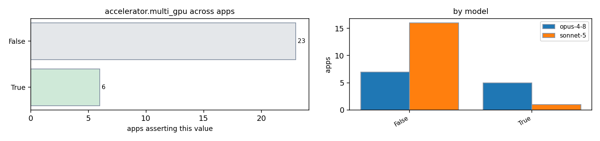

| app / variant | opus-4-8 | sonnet-5 | evidence |
|---|---|---|---|
| AMG2023:cuda | True | False | amg.c:360 (hypre_bind_device binds each MPI rank to one GPU by local rank) amg.c:154 (default memory/exec on HYPRE_MEMORY_DEVICE) absent: multi.?gpu|cudaSetDevice.*for.*loop|omp target device in amg.c |
| AMG2023:rocm | — | False | absent: multi.?gpu in amg.c and CMakeLists.txt |
| Kripke:kripke.exe:cuda | — | False | absent: cudaSetDevice|hipSetDevice|num_gpus|ngpu in src/ (searched whole src tree, no per-rank multi-device selection code found) |
| Kripke:kripke.exe:rocm | — | False | absent: cudaSetDevice|hipSetDevice|num_gpus|ngpu in src/ (no per-rank multi-device selection code found) |
| Kripke:kripke:cuda | False | — | absent: cudaSetDevice loop|multiple device per rank in src/ (single RAJA cuda_exec stream per process) |
| Kripke:kripke:rocm | False | — | absent: hipSetDevice loop|multiple device per rank in src/ (single hip_exec stream per process) |
| Quicksilver:cuda | — | False | absent: cudaSetDevice|MPI_Comm_rank.*Device|deviceId in src/ (no explicit multi-device selection code found; typical CORAL usage is 1 GPU per rank via job launcher, not asserted in code) |
| Quicksilver:rocm | — | False | absent: hipSetDevice|deviceId in src/ (no explicit multi-device selection code) |
| Quicksilver:threaded-mpi-cpu | — | False | absent: HAVE_CUDA|HAVE_HIP in src/Makefile:129-270 CPU sample build blocks |
| hypre:cuda | True | — | src/parcsr_mv/par_csr_matvec_device.c:34-36 (each rank drives its own device via comm_pkg; multiple GPUs coordinated across MPI ranks) |
| hypre:mpi-cuda-boomeramg | — | False | absent: multi.?gpu|SetDevice.*rank%|ndevices in src/parcsr_ls (device kernels operate on the single ParCSR partition owned by the MPI rank; no explicit multi-device-per-rank coordination found) |
| lammps:cuda-kokkos | True | — | doc/src/Speed_kokkos.rst:307-309 (MPI tasks/node equal to number of physical GPUs = one GPU per rank) doc/src/Speed_kokkos.rst:330-334 (multiple ranks/GPUs across nodes coordinate via MPI) |
| lammps:gpu-kokkos-reaxff | — | True | doc/src/Speed_kokkos.rst:306-334 (-k on g Ng ; 1 MPI task/node typically = 1 GPU/node; example: 2 MPI tasks/node, 2 GPUs/node) |
| lammps:rocm-kokkos | True | — | doc/src/Speed_kokkos.rst:307-309 (one MPI task per physical GPU) cmake/presets/kokkos-hip.cmake:19-21 (Cray MPICH GTL/HSA libs for GPU-to-GPU) |
| miniFE:cuda | True | — | cuda/src/exchange_externals.hpp:116-119 (each rank drives its own device; multiple ranks -> multiple GPUs coordinated via MPI) |
| miniFE:mpi-cuda | — | False | absent: multiple cudaSetDevice calls per process or NCCL/RCCL calls in cuda/src/ |
| mixbench:cuda | False | False | mixbench-cuda/main-cuda.cpp:20-23 (usage takes single optional GPU_ID, default 0) absent: multiple cudaSetDevice/stream-per-device usage in mixbench-cuda absent: cudaSetDevice.*for|multi.*gpu|NCCL|cudaDeviceEnablePeerAccess in mixbench-cuda/ |
| mixbench:opencl | False | False | mixbench-opencl/loclutil.h:31 (GetDeviceID by single index) absent: multiple clCreateContext-per-device in mixbench-opencl absent: clCreateContext.*multiple|NCCL|multi.*device|peer in mixbench-opencl/ |
| mixbench:rocm | False | False | absent: multiple hipSetDevice|per-device stream in mixbench-hip mixbench-hip/main-hip.cpp (single GPU selection pattern analogous to CUDA main) |
| mixbench:sycl | False | False | mixbench-sycl/main-sycl.cpp:14-15 (single device_index arg) absent: multiple queues per device in mixbench-sycl absent: NCCL|multi.*device|peer|for.*device in mixbench-sycl/ |
| osu-micro-benchmarks:mpi-cuda | — | False | absent: multiple cudaSetDevice|deviceCount>1|for.*gpu in c/mpi/pt2pt/standard/osu_bw.c; map_rank_to_gpu:33-35 shows the standard mapping is exactly one local rank to one GPU via CUDA_VISIBLE_DEVICES=$MV2_COMM_WORLD_LOCAL_RANK |
| osu-micro-benchmarks:osu_allreduce:cuda | — | False | absent: cudaSetDevice\(.*rank|multi.?device|ndevices in c/mpi/collective/blocking/osu_allreduce.c |
| osu-micro-benchmarks:osu_latency:cuda | — | False | absent: cudaSetDevice.*[2-9]|multi.?gpu|ndevices in c/mpi/pt2pt/standard/osu_latency.c |
| osu-micro-benchmarks:osu_latency:mpi-cuda-aware | False | — | absent: multiple.*device|per.process.*gpu|cudaSetDevice.*loop in c/mpi/pt2pt/standard/osu_latency.c (single device per rank, affinity from LOCAL_RANK README.md:1054-1058) |